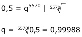

Aufgabe 213 Der prozentuale Anteil von Kohlenstoff C-14 im Holz wird dazu benutzt, dessen Alter zu bestimmen. C-14 hat eine Halbwertszeit von 5 570 Jahren. Wie alt ist ein Holz, wenn noch 70% C-14 vorhanden sind?  An = qn 0,7 = 0,99988n Logarithmieren: lg 0,7 = lg 0,99988n lg 0,7 = n * lg 0,99988 |:lg 0,99988 lg 0,7 - 0,1549 n = -------------- = ------------- = 2 978,8 Jahre lg 0,99988 - 0,000052